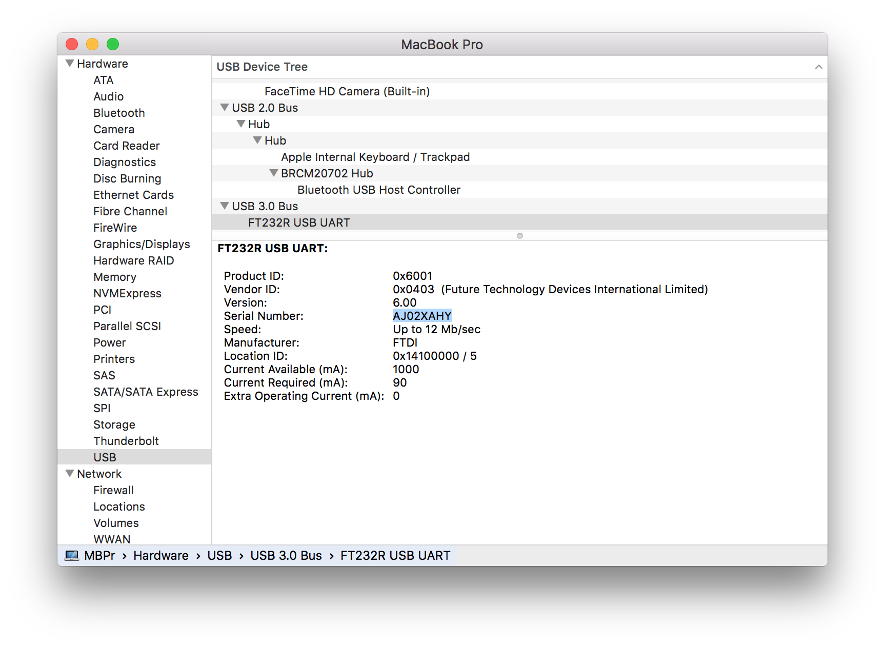
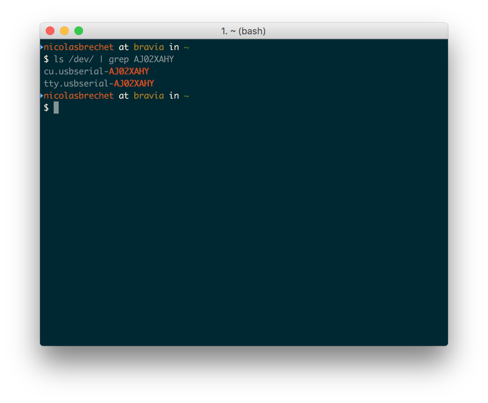
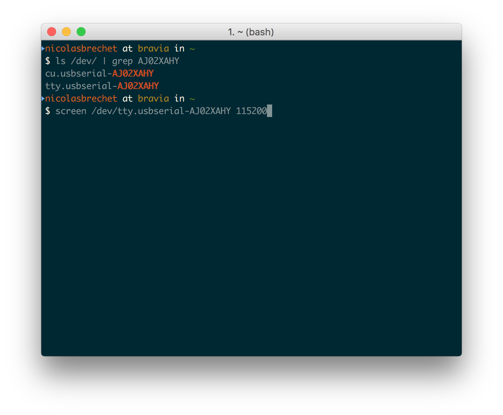
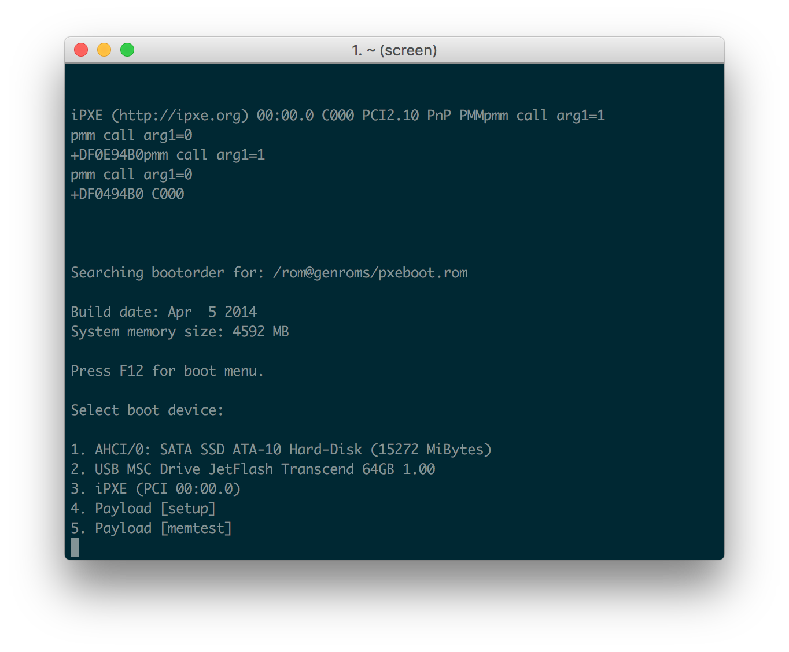
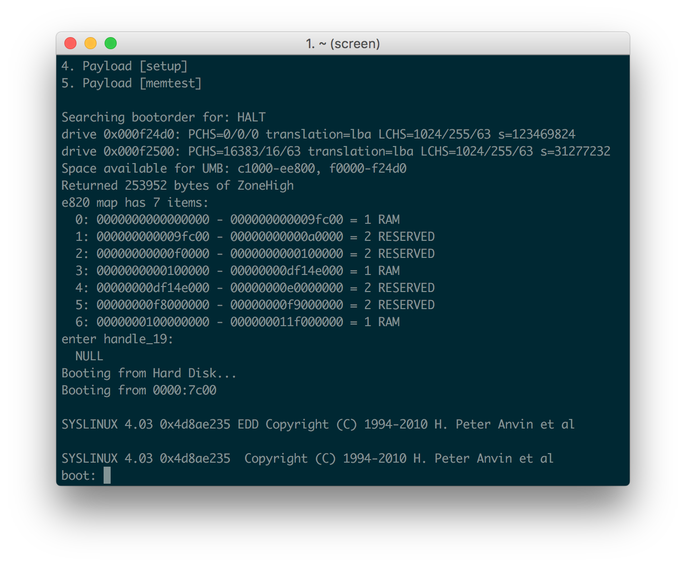
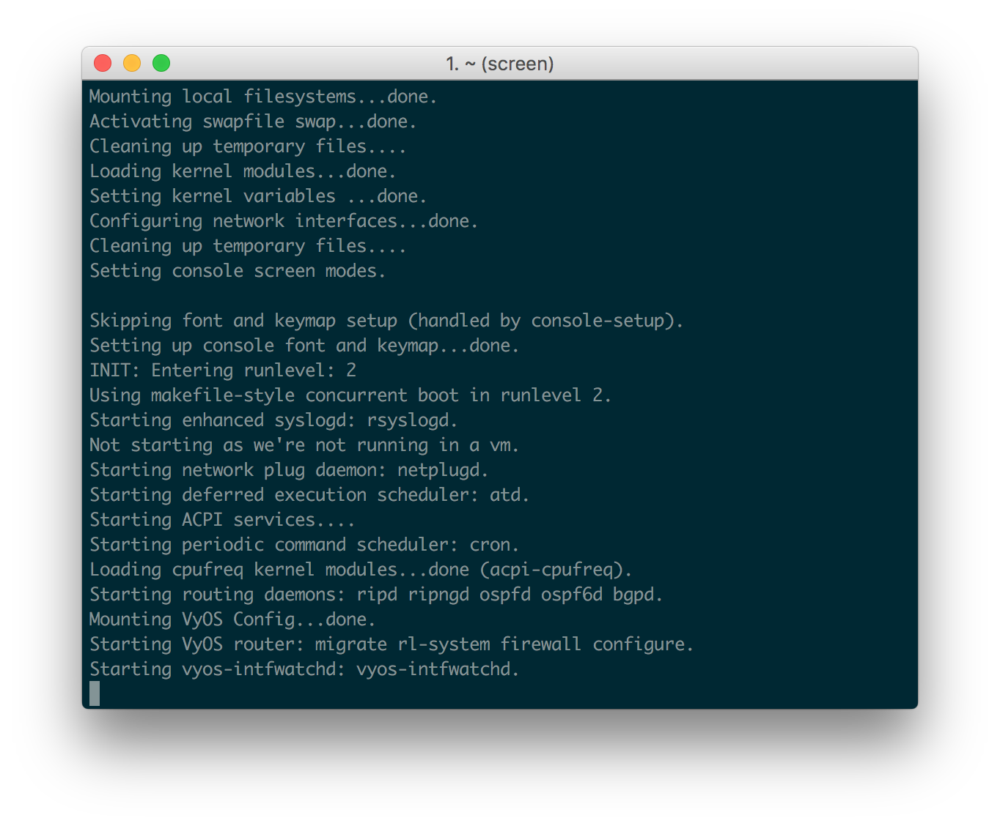
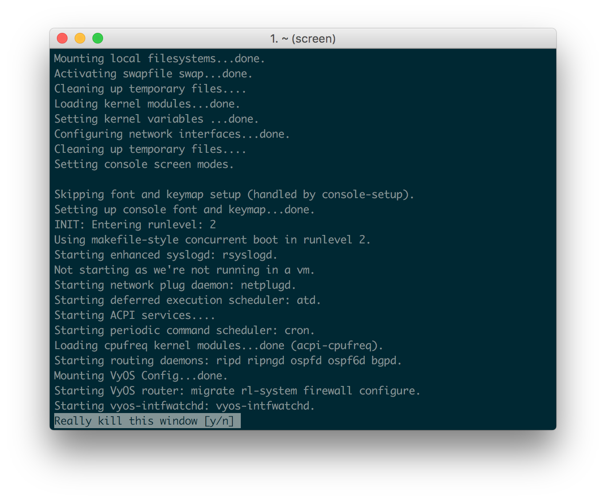
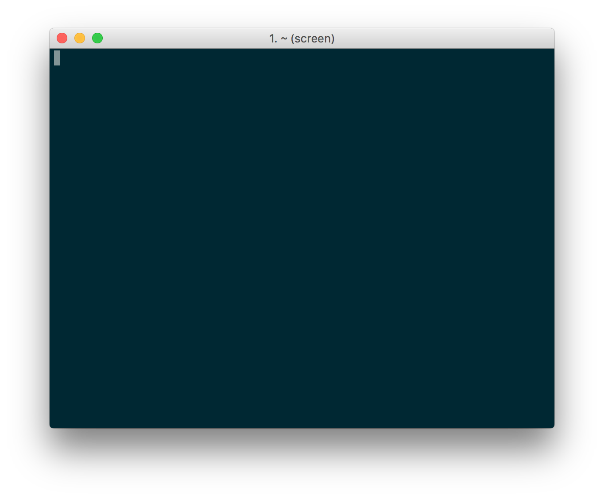
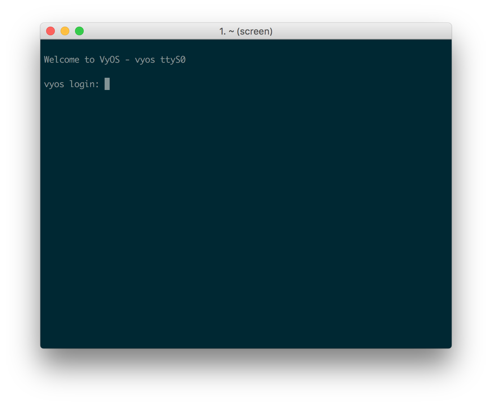

Installing VyOS on a PCEngines APU.1D4
I’m using a Macbook Pro running OS X 10.11 El Capitan.
Hardware
- PCEngines APU.1D4
- USB to Serial cable: I’m using a FTDI-based adapter with a FT232R chipset
- USB dongle: I’m using a Transcend USB3 / 64GB but that’s overkill. Just make sure there’s enough space to copy the VyOS ISO
Software
- Unetbootin to make the USB dongle bootable
- OS X 10.11 El Capitan (but you can do pretty much the same things in Windows or Linux)
- VyOS 1.1.6
Bootable USB dongle preparation
- Download the VyOS image
- Make sure the USB Dongle is formatted in MBR / MS Fat or Unetbootin will have difficulties recognizing it
- Use Unetbootin to copy the VyOS ISO
- Edit the syslinux.cfg: https://gist.github.com/nicolasbrechet/cbae692d38716567c84f
This is from this thread on the VyOS forum: http://forum.vyos.net/showthread.php?tid=12699
Serial connection
This is the hard part (well not that hard)
- Click on the Apple menu / About this Mac
- Then click on System Report
- In USB, find your USB/Serial adapter’s serial number

- Open a terminal. I use iTerm, but it’s not important.
- Find your USB/Serial adapter in /dev:
ls /dev/ | grep <serial number>

- Start a new screen session:
screen /dev/tty.usbserial-<serial number> 115200


At this point, you should:
- plug the USB dongle to the USB port of the APU.1D4
- plug the power adapter to the APU.1D4, then to your power outlet.
You will see text on iTerm, and you should be able to boot from the USB dongle. If you have something else installed already on your APU.1D4, like I did, you can unplug/replug the power to start over, in case you miss the boot menu…


Installation
The boot will look like it froze, showing Starting vyos-intfwatchd: vyos-intfwatchd and nothing else.

At this point, you should press on ctrl+a and then ctrl+k to kill the screen session.

Press y to confirm.
Change the settings for a new screen session with a speed of 9600:
screen /dev/tty.usbserial-<serial number> 9600
You might see a blank screen, press enter…

Now you can log in with user vyos and password vyos…

Enjoy !